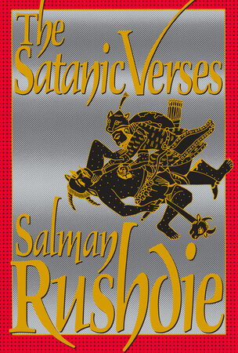

45:24 · 3 OPERE
Dibattito ad Oxford con Ben Shapiro.
Il filo del discorso
Il relatore commenta e traduce a braccio alcuni passaggi del confronto fra Ben Shapiro e una studentessa alla Oxford Union nell’ottobre 2023. La sua lettura, esplicitamente favorevole a Shapiro, si concentra sulle premesse delle domande, sul rapporto fra vittime civili e obiettivi militari e sul valore delle analogie storiche. Il paragone con la comunicazione pandemica ritorna più volte come esempio di ciò che considera una ripetizione di messaggi senza verifica. La discussione passa poi ai bombardamenti della Seconda guerra mondiale, alla distinzione fra popolazione e gruppi armati, alle parole occupazione e apartheid e al tema dei diritti uguali. La chiusa lascia Oxford per criticare un incarico ONU affidato a un rappresentante iraniano, ricordando Rushdie, Neda Agha-Soltan e Jina Mahsa Amini. La scheda separa tre livelli: le domande della interlocutrice, le risposte di Shapiro e le interpretazioni del relatore. Non assume da questa polemica diagnosi personali, conteggi non contestualizzati o un giudizio definitivo sulla liceità di singole operazioni militari.
I libri nel discorso

Umano, troppo umano
Identificazione probabile
Copertina del primo volume digitale: COPERTINA DEL PRIMO VOLUME DIGITALE, Adelphi eBook 2016, traduzione di Sossio Giametta, XVI e 329 pagine nell’edizione di riferimento, ISBN 9788845977770. Fondo giallo con dicitura Adelphi eBook e Volume primo. Non è la copertina del secondo volume né dell’edizione cartacea. L’opera originaria del primo volume uscì nel 1878; il richiamo del video non consente di determinare un tomo o un’edizione.
Immagine editoriale dell’ebook del volume I, non edizione attribuita al video. Il richiamo al titolo è probabile e non identifica una citazione testuale.
Formula Umano, troppo umano con attribuzione a Nietzsche: possibile allusione al libro già presente, non annuncio di una lettura.
Passaggio 12:05 ↗ · Fonti e libro ↗Sacred Emily
Identificazione probabile
Copertina della raccolta: COPERTINA DELLA RACCOLTA Geography and Plays, University of Wisconsin Press, ISBN 9780299134747, introduzioni di Sherwood Anderson e Cyrena N. Pondrom. Edizione del 1993 e ristampa datata 5 dicembre 2012 nel catalogo del libraio, 434 pagine; Google Books conteggia 447 pagine. Il testo originale del 1922 contiene Sacred Emily, pagine 178–188.
Copertina autentica della raccolta Wisconsin con ritratto di Stein e titolo giallo; non copertina di una poesia pubblicata autonomamente. Il testo e il verso della rosa sono riscontrati nell’edizione integrale del 1922, non nella raccolta Tender Buttons.
La formula della rosa è riconoscibile: possibile allusione alla poesia già repertoriata, autrice e titolo non pronunciati qui.
Passaggio 27:59 ↗ · Fonti e libro ↗
I versi satanici (The Satanic Verses)
Identificazione probabile
Copertina: The Satanic Verses, Viking, edizione rilegata statunitense del 22 febbraio 1989, 560 pagine, ISBN 9780670825370. Copertina intera con bordo rosso e figure nere e gialle, scaricata dall’immagine editoriale dedicata e non dal riquadro social. L’edizione americana del 1989 non sposta al 1989 l’originale britannico del 1988.
Immagine autentica dell’opera, controllata visivamente; l’edizione di riferimento non è attribuita al filmato.
Rushdie, romanzo e fatwa: collegamento probabile a I versi satanici, senza titolo pronunciato.
Passaggio 42:49 ↗ · Fonti e libro ↗Minutaggi ricavati da testi automatici, da riascoltare. Le identificazioni probabili sono segnalate accanto ai libri.